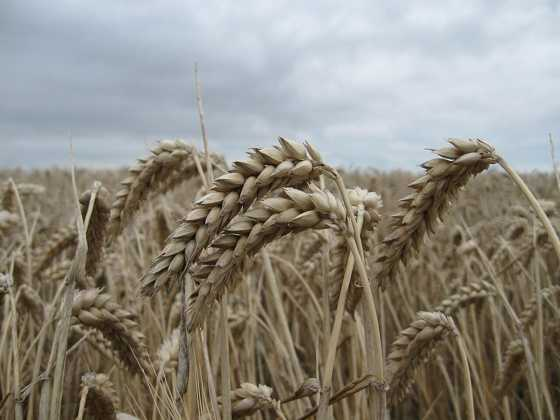
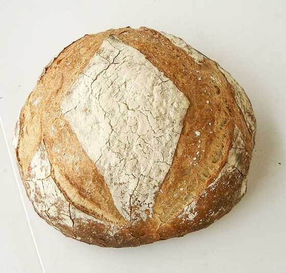
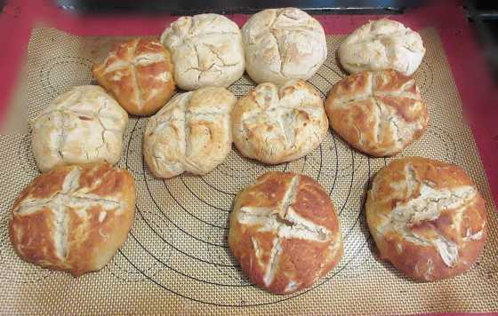

お店の由来・想い
看護師から、パン屋へ
Urusumi(うるすみ)は、愛媛県伊予市双海町の閏住(うるすみ)地区にある自家製酵母パンのお店です。紹介記事によると、店主はもともと看護師で、長く抱いていたパン屋の夢をかなえ、2016年にご主人の実家でお店を開きました。パンは店主がひとりで作っています。
お店の紹介文には、自然の力で酵母を起こし、ゆっくり発酵させること、山の水やこの地で採れた果物・野菜、海の幸を使うこと、季節を感じるパンやお菓子を作ることが書かれています。「双海の夕日」と名づけたトマトのマフィンや「下灘シナモンロール」など、この土地の景色が名前にも映っています。
店名の意味は公開情報では確認できませんでした。地区名と同じ読みですが、由来は断定しません(制作側のイメージです)。

パン・お菓子
紹介されているパン
以下は過去の紹介記事に載っていたものです。現在の品揃えは変わる場合があります。
営業日: 土曜のみと紹介されています(最新情報は準備中。Instagramでご確認ください) / 価格: 準備中







写真はフリー素材のイメージで、実際の商品ではありません。
口コミ
お客さまの声(イメージ例)
イメージ例
土曜のお昼に取りに行きました。素朴で、噛むほどに味が出るパンでした。
イメージ例
シナモンの香りがふわっと広がって、帰り道の海を見ながら食べました。
イメージ例
季節ごとに違うパンに出会えるのが楽しみです。
上の3件は制作側が作った例文です。実在のお客さまの声ではありません。